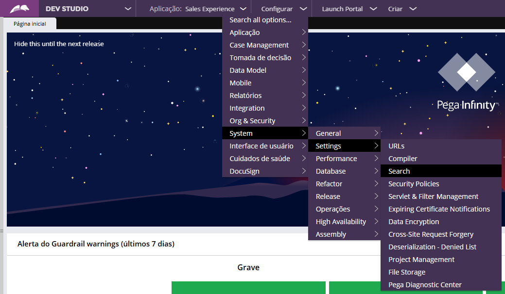
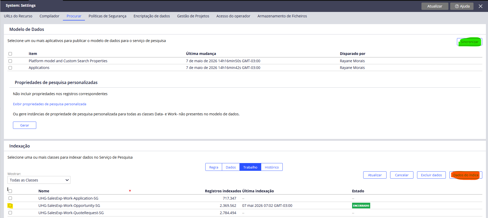

Soluções Sistêmicas - Erro Indexação
Erro ao localizar casos utilizando os campos de pesquisa do Pega. Ao verificar a fila de logs, são identificados itens interrompidos no Job pySASIncrementalIndexer para a classe do caso pesquisado.
Exemplo de erro apresentado:
Para corrigir o problema, é necessário realizar a reindexação da classe afetada. Segue o passo a passo:

Para realizar a reindexação no Pega 24.2, acesse a classe que está apresentando erro e selecione a opção “Dados do Índice”. Na sequência, inicie o processo de indexação da classe. Após a execução, o status deverá permanecer como “Indexação Contínua”, indicando que o processo foi iniciado corretamente. Caso a reindexação não seja concluída ou o problema persista, utilize a opção “Sincronizar” para atualizar os dados do índice e, em seguida, repita o processo de reindexação anteriormente realizado. Após a conclusão, recomenda-se validar novamente a pesquisa dos casos para confirmar que a indexação foi normalizada. Segue abaixo a imagem de referência para auxílio no procedimento:
